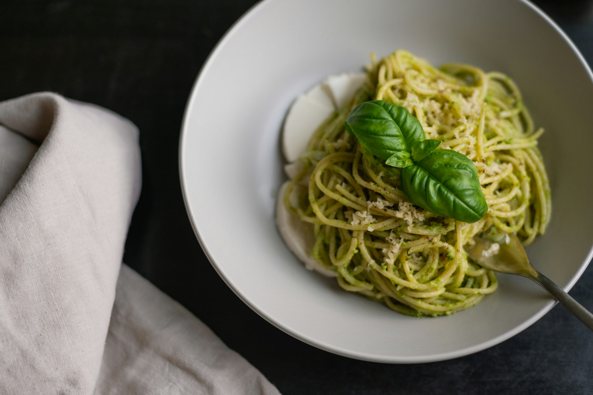

Meet Lemon Pesto
Home

The 5-Ingredient No-Cook Sauce Ready Before Your Pasta's Done Boiling
This lemon pesto sauce, a pesto that hails from the Amalfi Coast of Italy, is bright and rich, made with zesty, slightly bitter lemon zest rather than basil leaves. It has so many uses: try it as a spread, a pasta sauce, over chicken, or as the base of a dip.
Ingredients
- 4 large lemons, scrubbed
- 1 cup grated Parmesan cheese
- 1/3 cup blanched slivered almonds
- 4 tablespoons warm tap water
- 1 garlic clove
- 3/4 teaspoon kosher salt
- 1/2 teaspoon white sugar
- 1/4 teaspoon ground black pepper
- 6 tablespoons extra-virgin olive oil, divided
Steps
- Gather all ingredients.
- Using a Y-peeler, remove yellow zest from lemons in large strips, avoiding the bitter white pith as much as possible. This should yield about 1/2 cup zest. Juice lemons to yield 1/4 cup juice. Discard juiced, skinned lemons; reserve any unjuiced lemons for another use.
- Place lemon zest, lemon juice, Parmesan, almonds, water, garlic, salt, sugar, pepper, and 3 tablespoons oil in the jar of a blender; process until lemon zest is finely chopped and mixture is roughly combined, about 15 seconds, stopping to scrape down sides as needed.
- With blender running, slowly pour remaining 3 tablespoons oil through food chute, processing until mostly smooth and emulsified, about 1 minute, stopping to scrape down sides as needed.
- Use immediately or store in an airtight container for up to 1 week